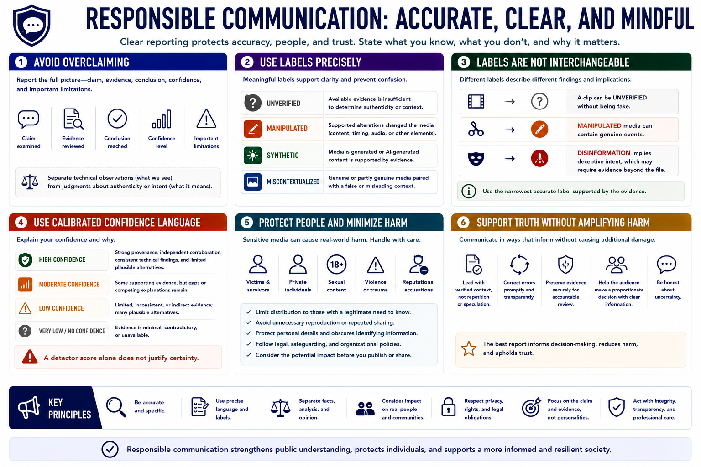

Responsible Communication
Connecting to LMS... Progress: in progress

Narration
Responsible communication protects accuracy and reduces harm. Avoid overclaiming. State the claim examined, evidence reviewed, conclusion reached, confidence, and important limitations. Separate technical observations from judgments about authenticity or intent.
Use labels precisely. Unverified means available evidence is insufficient. Manipulated means supported alterations changed the media. Synthetic means generation is supported by evidence. Miscontextualized means genuine or partly genuine media is paired with a false or misleading context.
These labels are not interchangeable. A clip can be unverified without being fake, and manipulated media can contain genuine events. Disinformation additionally implies deceptive intent, which may require evidence beyond the file.
Use calibrated confidence language and explain why. High confidence should reflect strong provenance, independent corroboration, consistent technical findings, and limited plausible alternatives. A detector score alone does not justify certainty.
Sensitive media may involve victims, private individuals, sexual content, violence, or reputational accusations. Limit distribution, avoid unnecessary reproduction, protect personal details, and follow legal, safeguarding, and organizational reporting procedures.
Support truth without amplifying harm. Lead with verified context rather than sensational repetition, correct errors promptly, and preserve evidence for accountable review. The best report helps the audience make a proportionate decision while remaining honest about uncertainty.